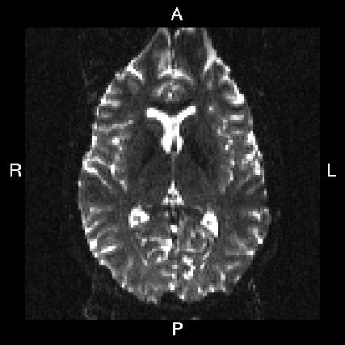
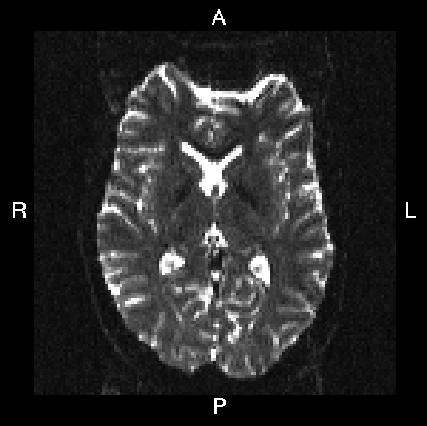
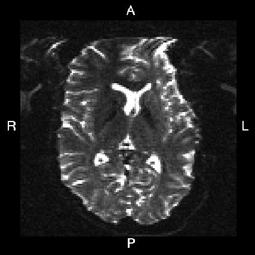

Contents
How do I know what phase-encode vectors to put into my --datain text file?
Below you see four examples of images acquired with different phase encoding. Below the images you see what you would find in the PDF protocol generated on a Siemens scanner for these acquisitions. Unfortunately I don't have enough experience of other scanner manufacturers to know where to find the information from those.
If you are uncertain about how to create your own --datain file I suggest you get your scanner protocol, load your images into FSLVIEW and then find which of the images below that looks most like then one you have. When you have done that compare the "Phase enc." entry below that image with that in your protocol. When you are happy that you have found the right column you can use the three first values from the vector below the image.
Finally look up the "Echo spacing" and "EPI factor" entries in your protocol and calculate the fourth column from the formula
where SE is the echo spacing in ms and FEPI is the EPI factor.
What you see in FSLVIEW |
 |
 |
 |
|
In Siemens protocol |
Phase enc. dir. P >> A |
Phase enc. dir. A >> P |
Phase enc. dir. R >> L |
Phase enc. dir. L >> R |
In --datain file |
0 1 0 0.095 |
0 -1 0 0.095 |
1 0 0 0.122 |
-1 0 0 0.122 |
Faq/L_2_R.jpg "L_2_R.jpg")